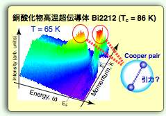
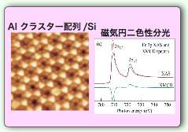
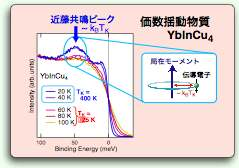
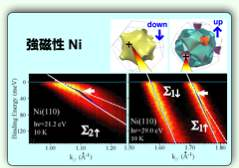

【光物性の研究内容】
高温超伝導や磁性をはじめとする固体の電気的・磁気的性質はすべて電子が担っています。本研究室では、固体中の電子状態を直接観測する事ができる放射光を用いて、固体物性現象のメカニズムの解明を目的としています。また、試料作製から測定まですべて超高真空下で行う事を可能にし、低次元物質の特異な物理現象など最先端の研究を幅広く行っています。特に、最新の技術を導入する事で高分解能を実現し、大きな研究成果を挙げています。本研究室は、学生が主役となって研究が進んでおり、学部生も先頭に立って最先端の研究を行っています。

高温超伝導体の微細電子構造の研究
高分解能角度分解光電子分光によって超伝導状態の準粒子を直接観測することで、電子が受ける相互作用の性格を調べ、高温超伝導発現の微視的メカニズムの解明に挑戦しています。

ナノスケールにおける磁気状態の研究
遷移金属のナノドットや量子細線、非磁性単結晶 (Cu、Au) 表面上の遷移金属薄膜などが示す特異な磁気状態・電子状態を磁気円二色性実験を用いて探索しています。

スピン分解光電子分光を用いた電子構造の研究
スピン分解光電子分光により、Bi および Sb の表面準位やTi酸化物が示すエネルギーギャップ形成、金属・絶縁体転移や価数転移などのメカニズムの解明に取り組んでいます。

固体中の準粒子構造の研究
高分解能角度分解光電子分光でフェルミ面全体の準粒子構造の精密観測を行い、多体相互作用（電子−電子、電子−フォノン、電子−マグノン、電子−不純物）の運動量や、バンド、スピンによる変化の研究という新領域を開拓しています。